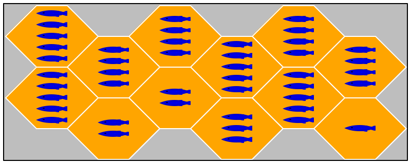
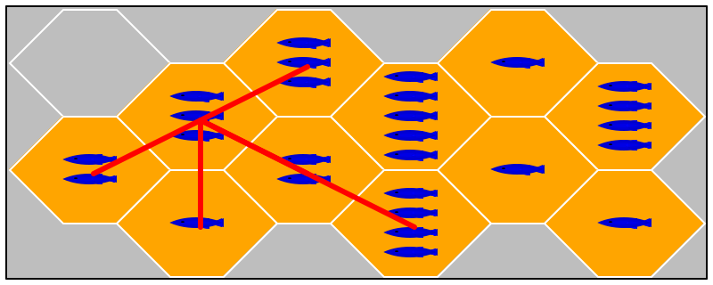

3 —
Due Tues, November 15, 2022 9:59:59pm Thurs, November 17, 2022 9:59:59am
Delivery Place the product of this week’s project steps into your repo as follows:
for the Design Task, place games.md in Planning/
for the Programming Task, place state.PP where .PP is the extension for a source file in your chosen programming language, e.g. .py in Common/
for the Testing task, place xboard and Tests/ in a repo-level directory named 3
You may create Other/ directories in both 3 and Fish.
Programming Task Design and implement a game state data representation, including the following operations. A game state represents the current state of a game: the state of the board, the current placements of the penguins, knowledge about the players, and the order in which they play.
A game state representation may be used by the referee component to perform turns and check rule-conforming behavior. A player component can use it for planning purposes.
creating a state for a certain number of players;
place an avatar on behalf of a player;
move an existing avatar from one spot to another on behalf of the player;
determine whether any player can move an avatar; and
rendering the state graphically.
If your programming language supports pictures as values—
like say BSL and ISL in F I— -your method or function may return such a picture. Otherwise it consumes a window and adds it to a window.
Design Task Both referees and (well-behaved) players will need to check whether an action is legal according to the rules of Fish. A well-chosen data representation will enable two different mechanisms to check rules and to plan a player’s next move (based on some look-ahead).
Describe a data representation for representing entire games. Roughly speaking, a game is a tree of all potential moves in any state reachable from a given starting point. Assume that the starting point is a state in which all players have placed all their available penguins. Both the referee and the players can use this structure to check the validity of actions or plan ahead.
Such descriptions typically mix nglish and references to the data sub-language of your chosen programming language. Add a description of an external interface; this may look like the wish lists from Fundamentals I and II. Distinguish the two parts clearly.
The memo must not exceed two pages. Less is more.
Testing Task Create a test harness named xboard. The harness consumes its JSON input from STDIN and produces its results to STDOUT. Create three tests and place them in the specified folder.
The tests are formulated as pairs of files: <n>-in.json, the input, and <n>-out.json, the expected result, for an integer <n> greater or equal to 1.
|
{ "position" : Position, |
"board" : Board} |
|
either 0 or a number between 1 and 5. |
The size of the board may not exceed a total of 25 spots. |
INTERPRETATION A 0 denotes a hole in the board configuration. All other |
numbers specify the number of fish displayed on the tile. |
|
[board-row,board-column] |
INTERPRETATION The position uses the computer graphics coordinate system |
meaning the Y axis points downwards. The position refers to a tile |
with at least one fish on it. |
Its expected outputs is the number of tiles on the board that can be reached from the specified position.
{"board":[[1,2,3],[4,0,5]],"position":[0,0]}

{"board":[[1,2,3],[4,0,5],[1,1,0]],"position":[0,0]}

Well-formed and Valid You may assume that all inputs for your test harnesses will be well-formed JSON and valid according to the homework descriptions. As a reminder, a well-formed Position would be [1001,2], but it would be invalid for the above boards; [0,1] would be well-formed and valid for both of these boards.
Beyond integration testing, we should eventually move to stress testing. However, this semester our course will not have you implement this idea.
Pedagogy Besides unit tests, multi-component projects also need integration tests. Such tests compose several components and run tests on the composite that exercise functions across the components. This task is a lightweight illustration of this idea.
NOTE: Some of you may not have pruned straight lines at holes in the
board or even avatars on the board (though that is not a part of the
board data representation anyways). For the grading of 2 —
You will have to add code to deal with the (de)serialization between your chosen data representation and JSON.
When a milestone assignment requests such test harnesses, you should
not need—
Like unit tests, an integration test may check properties of expected outcomes, instead of the complete outcome.
You may wish to place unit tests into Other/ if your chosen programming language does not permit co-mingling tests with the code for xboard within 3.